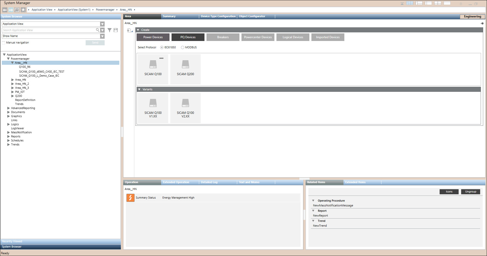

Create an IEC 61850 device
- In the System Browser, select ApplicationView > Powermanager > [Area].
- Select Area tab.
- Click Create
 > Create Device.
> Create Device. - Navigate to Create expander > PQ Devices, and select IEC 61850 protocol.
- Select the required device and variant.
- Navigate to Create > Communication, and enter the IP Address.
- Select address profile in the Measurement Interval.
NOTE: Measurement Interval dropdown is not applicable for Q100 devices with firmware version number V1.XX. - Click Save
 .
. - Save Object as popup window appears.
- Enter the Name and Description.
NOTE: The network name is created with 3 characters (IEC) by default, and the device name must be created with 17 characters to ensure that the total length of the network and device names does not exceed 20 characters. - Click OK.
- Device created successfully. Configure the created device.
